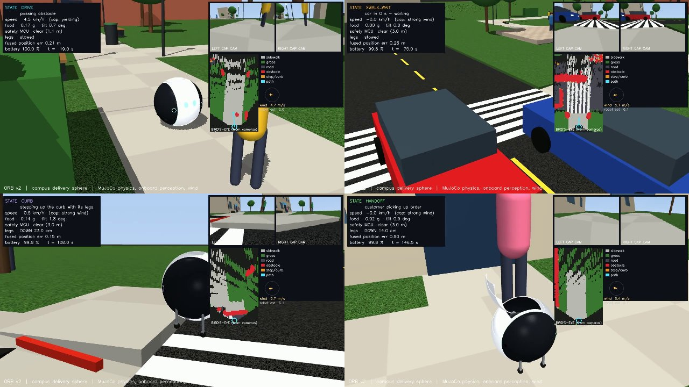

Arrows: drive / steer · Space: stop · O: hatch
The delivery concept
AI concept film with animated stills. Not live hardware footage or a physics replay.
Small footprint. Serious mechanisms.
Rolling sphere
Translucent shell, tread bands, camera caps and an insulated, leveled food pod.
Beyond the curb ramp
Telescoping legs with driven wheels. The native simulation tests 3–15 cm curb climbs.
Design cruise limit
Native planner slows for people, corners and wind. This is a model target, not a measured hardware result.
See the actual tests
12 cm curb ascent · native physics replay
12 cm curb descent · native physics replay

Native simulated run: about 85 m in 157 s, zero person/car contacts in this scenario. Perception, friction and people are modeled; hardware validation remains open.
Full design and caveats · Parts and estimated costs · Run metrics · Original desktop controller